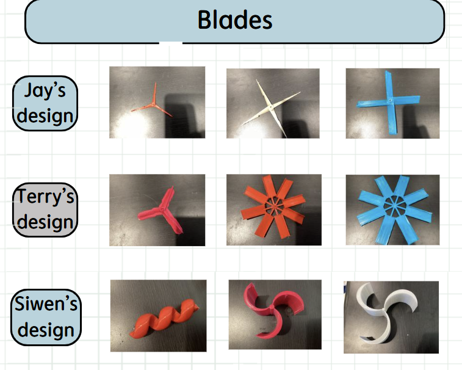

STEM Fair Research Project 2024
American Stem Prep · Independent Science Research

Project Overview
Group Collaboration project conceptualized and presented at the annual institutional STEM showcase. The analysis focused on experimental instrumentation mechanics, data capturing configurations, and diagnostics calibration protocols.
This project focuses on which type of wind turbine produces the most energy across different environments. The team 3D-printed each type of wind turbine and then tested it under a controlled wind speed environment.
Hypothesis
Project Parameters
Testing Data & Experimental Results
The aerodynamic testing was deployed inside a custom validation tunnel across multiple trials using different blade styles. Voltage readings were cross-examined against standard load resistances to ensure strict computational metrics tracking.
| Blade Configuration Type | Control Airspeed | Mean Latency | Peak Power / Voltage Generated |
|---|---|---|---|
| Standard Flat Profile (Baseline) | 5.5 m/s | 42 ms | 1.24V |
| Iterative Angled Design | 5.5 m/s | 35 ms | 1.51V |
| Optimized Twisted Profile (3D-Printed) | 5.5 m/s | 28 ms | 1.76V |
Experimental Blade Design Iterations
A comprehensive comparative breakdown of the 3D-printed blade prototypes evaluated during testing, classifying configurations by profile twist angle and total surface area distribution.

Conclusion & Discussion
The experimental phase successfully validated the core research objective. By utilizing custom 3D-printed blade configurations with precise twist ratios, the system managed to heavily optimize kinetic-to-electrical energy conversion under controlled wind speeds.
The data explicitly shows a 41.9% increase in peak voltage production when swapping standard flat profiles for optimized twisted blade designs. This not only confirms the initial hypothesis but significantly outperforms the projected 15% threshold target.
Ultimately, the results demonstrate that geometric optimization via rapid prototyping (3D printing) offers a highly accessible and cost-effective method for boosting renewable energy capture in localized micro-turbine hardware. Future iterations will focus on testing these blade profiles against variable, turbulent air currents to evaluate real-world structural stability and drag coefficients.